Case Study · UX/UI & Web Design

Taking a broad, multi-disciplinary consulting offering and making it feel focused, credible, and easy to act on.
Aaron Douglas LLC is a Chicago-based consulting firm that helps educational institutions, nonprofits, and small businesses unlock new levels of impact — drawing on expertise across curriculum design, nonprofit management, software development, and digital marketing.
I designed the site's UX and UI — the structure, the user flow, and the interface — translating a wide-ranging service business into a focused experience that guides three very different audiences toward one next step: booking a consultation.
The Challenge
Consulting websites have a recurring problem: the offering is broad and abstract, so they easily become vague, dense, and forgettable. Aaron Douglas LLC had three specific design challenges baked in from the start.
Goals
Process
"Framing each service as an outcome rather than a discipline turns an abstract menu into a story a prospect can see themselves in."
Homepage narrative sequence
The Three Value Pillars
Before a visitor reads a single service description, they need to understand the shape of what's on offer. These three pillars do that work at a glance.
Key Sections & Decisions
Outcome
A complete UX/UI design for the Aaron Douglas LLC website — structure, flow, and interface — that turns a broad, multi-disciplinary consulting offering into a clear, conversion-focused experience. A site that addresses three distinct audiences from one cohesive design and guides each toward a single primary action, delivered live on WordPress/WooCommerce.
What I'd Explore Next